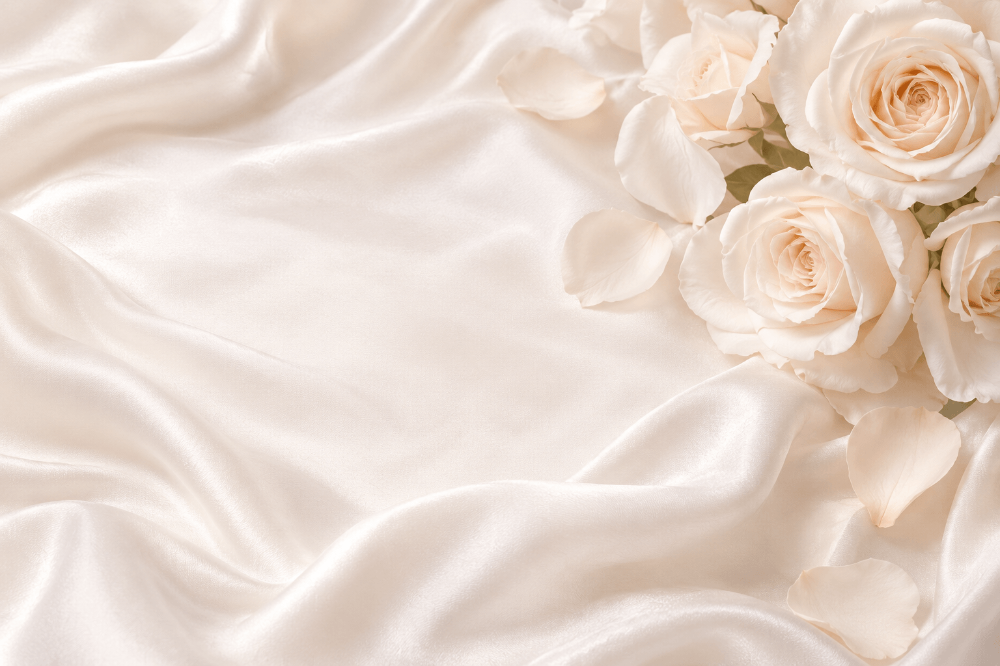
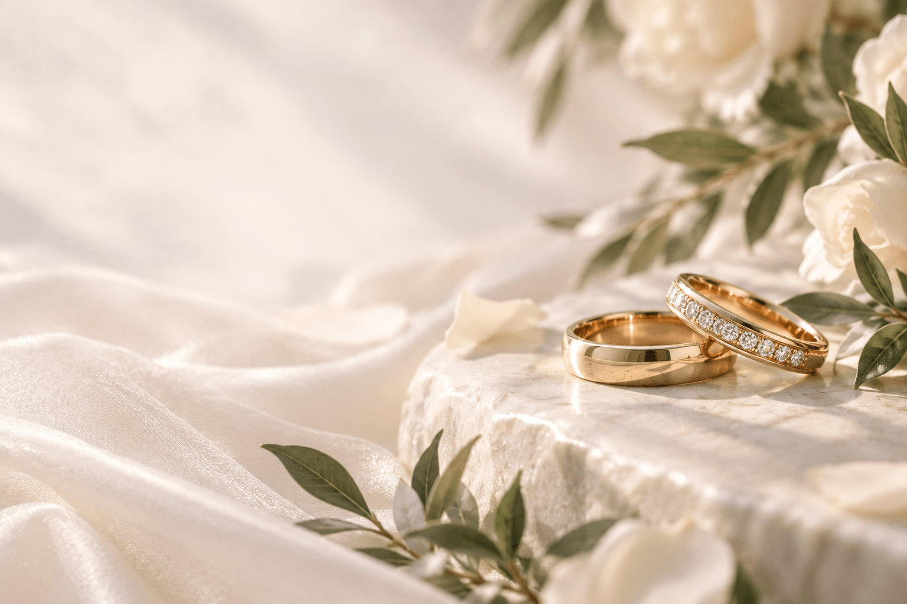

Nuestra boda
14 · Noviembre · 2026
Una nueva historia comienza.
Falta poco para nuestro gran día

Hay momentos que se sienten destinados, y este es uno de ellos.
Un día muy especial
Queremos celebrar contigo
Queremos compartir contigo uno de los capítulos más importantes de nuestra historia. Tu presencia hace la diferencia y nos llenará el corazón.
Gracias por ser parte de este momento tan especial.
Con su bendición
Quienes caminan con nosotros
Padres de la novia
Ana Luz Ocampo Exiga
Gilberto Vallejo Mireles
Padres del novio
Ma. de los Ángeles Aguado Balderas
José Mario Araiza Rios
Sábado 14 de noviembre
Lugar y hora
Ceremonia religiosa
4:30 pm
Parroquia de Nuestra Señora de los Dolores
Plaza Principal, Centro
Dolores Hidalgo, Gto.
Recepción
7:00 pm
Quinta La Estación
Granada 4, Col. Miguel Hidalgo
Dolores Hidalgo, Gto.

Celebremos lo extraordinario de estar juntos.
Código de vestimenta
Formal
Les pedimos con cariño reservar el blanco para la novia y evitar el color rojo. Tu estilo también forma parte de esta historia.
Mesa de regalos
Un detalle con nosotros
Acompañarnos ese día ya es el regalo más grande. Y si además quieres tener un detalle con nosotros, aquí encontrarás nuestra mesa.
Ver mesa de regalos
Más que un día, una vida juntos.
Asistencia
Te esperamos
Saber que vienes nos ayuda a cuidar cada detalle. Te agradecemos confirmar antes del 15 de octubre de 2026.
Tu presencia es nuestro mejor regalo.